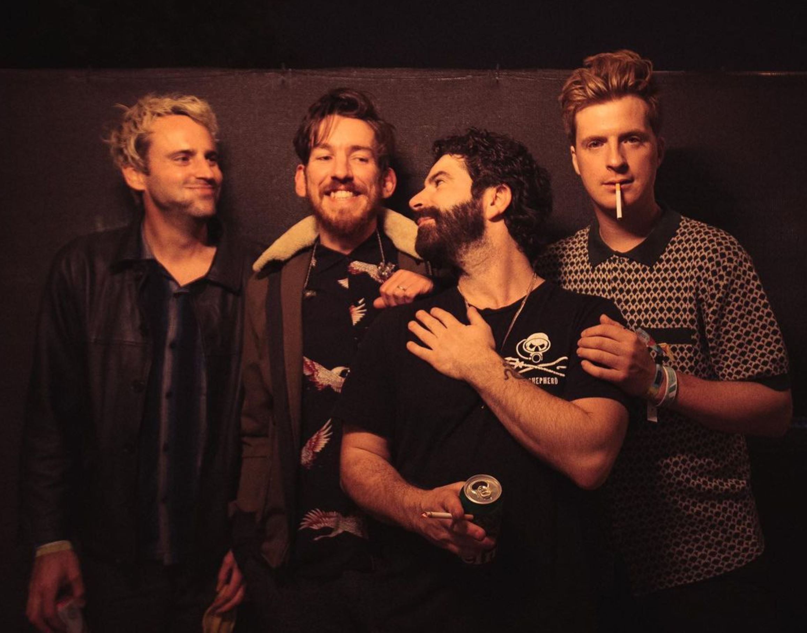
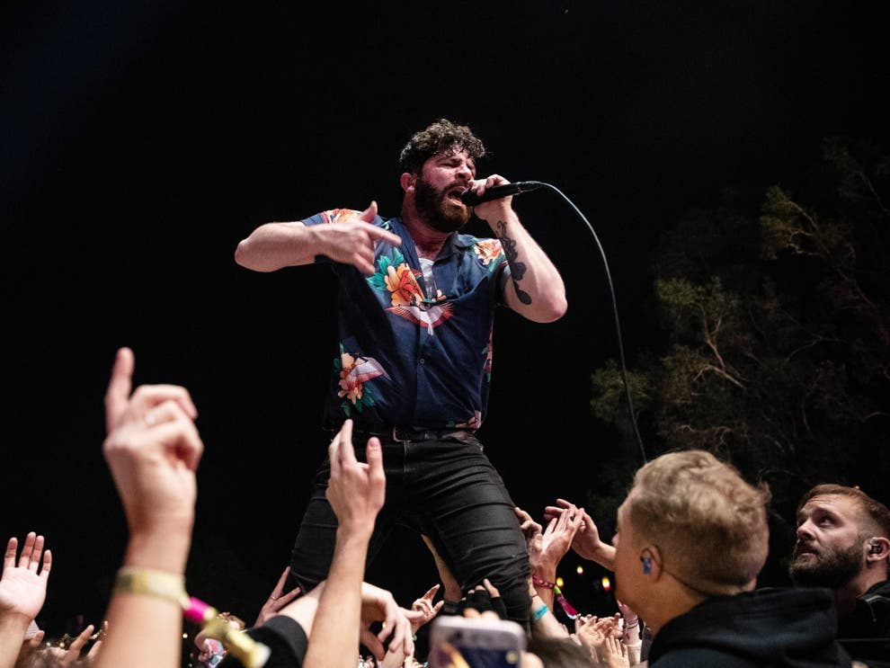
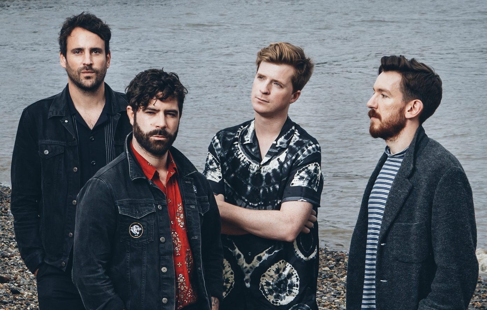

News
Foals Part Ways With Keyboardist Edwin Congreave
“After 15 years of sweet music making & surfing the globe together he’s decided to hang up his musical boots to pursue other avenues of life”
All Points East disappoints Foals fans with ‘worst sound ever’
Monday night of the festival was headlined by the British rock band.
Foals share new ‘CCTV Sessions’ and talk touring and new material
"I could see us doing a record that’s more stripped-back and has more of these textures,” frontman Yannis Philippakis tells NME.